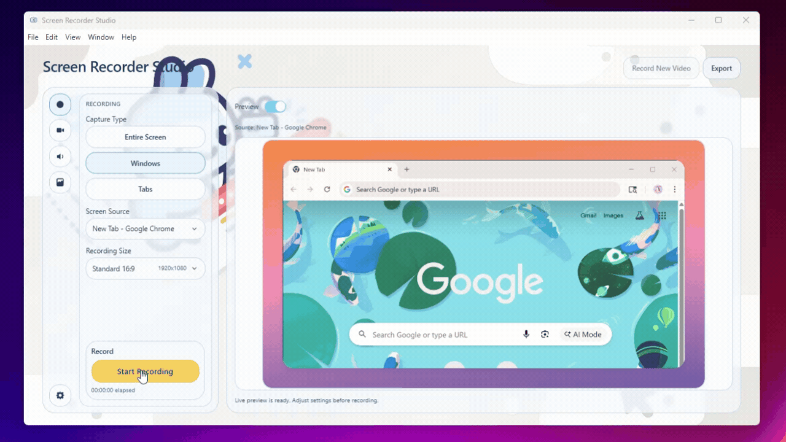

Windows Screen Recorder
A simple Windows-first screen recorder that helps you capture polished recordings with webcam, audio, backgrounds, and clean exports without a complicated workflow.
Download for WindowsDuring installation, a warning message may be shown since this is a new app. Select "More info" -> "Run anyway."
